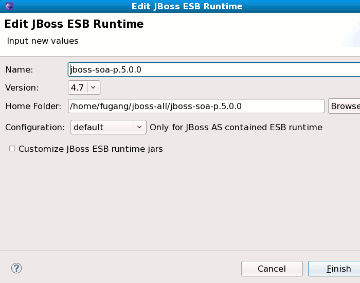
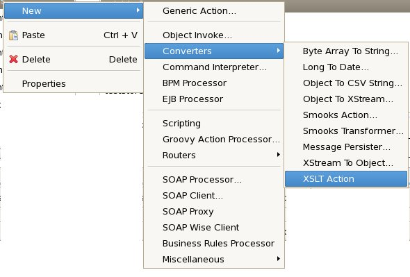
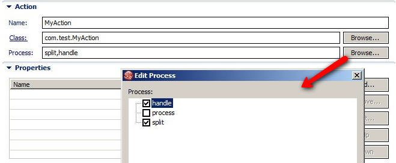
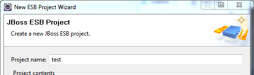

Runtimes
The ESB runtime definition now supports ESB 4.7 which had an updated layout for jars and new schema files.
In early ESB tools, hardcode to use "default" configuration as JBoss Server configuration when define a ESB runtime by point to a SOA-P, in the new ESB tools, the user can choose any available configurations, for Server applied ESB runtime in ESB project creation wizard, the configuration will be picked up from JBoss server runtime.
Deployment
The ESB projects are now full fledged WTP modules meaning it is possible to use an ESB module inside a WAR or EAR in WTP. ESB projects can still be deployed as an individual module.
Editors
When editing ESB actions which refer to other files (Drools, Groovy, Smooks, etc.), the label for the field turns into a link to launch the editor associated with that type of file. Simply click the link and the appropriate editor should launch if the path to the file is accessible within the project.

New actions are available to support ESB 4.7. New actions (XsltAction, PersistAction, BpmProcessor, ScriptingAction), new processors (EJBProcessor), new routers (HttpRouter, JMSRouter, EmailRouter), and more -- SyncServiceInvoker, EmailWiretap, Wise SOAP Client, SOAPProxy, and SchemaValidationAction, as well as changes to existing components.
The class of Action's now has a Browse button which will show you possible classes that extends from AbstractActionLifecycle.
The Process field on an Action in the ESB now has a Browse button which allows you to select which method on the Action class should be used for the proces. The list in the dialog will show all public methods that has a Message parameter. You can select multiple methods if you need.

Wizards
The ESB wizards now uses a more ESB like icon instead of the default "red ball".
